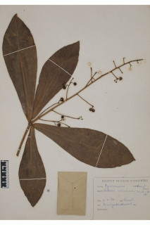
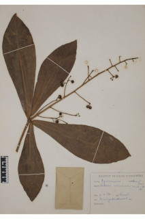

Small trees or large shrubs up to 4 m tall.
5 ಮೀ. ಎತ್ತರದವರೆಗಿನ ಸಣ್ಣ ಮರಗಳು ಅಥವಾ ದೊಡ್ಡ ಪೊದೆಗಳು.
Small trees or large shrubs up to 4 m tall.
பெரிய குத்துச்செடி முதல் சிறிய மரம் 4 மீ. உயரம் வரை வளரக்கூடியது.
Young branchlets subterete, glabrous.
ಎಳೆಯ ಕಿರುಕೊಂಬೆಗಳು ಉಪ-ದುಂಡಾಗಿದ್ದು ರೋಮರಹಿತವಾಗಿರುತ್ತವೆ.
Young branchlets subterete, glabrous.
சிறியநுனிக்கிளைகள் குறுக்குவெட்டுத் தோற்றத்தில் வளையமானது, உரோமங்களற்றது.
Leaves simple, alternate, spiral, subverticilate; petiole ca. 0.5 cm long or subsessile, canaliculate, glabrous; lamina 14-29 x 4.5-7.5 cm, oblanceolate, apex acute, base rounded to auricled, margin entire, transparent gland dotted, coriaceous, glabrous; midrib canaliculate above; secondary_nerves ca. 11-16 pairs; tertiary_nerves broadly reticulate.
ಎಲೆಗಳು ಸರಳವಾಗಿದ್ದು ಪರ್ಯಾಯ ಮತ್ತು ಸುತ್ತು ಮತ್ತು ಉಪ-ಆವರ್ತನ ಜೋಡನಾ ವ್ಯವಸ್ಥೆಯಲ್ಲಿರುತ್ತವೆ; ತೊಟ್ಟುಗಳು ಅಂದಾಜು 0.5 ಸೆಂ.ಮೀ. ಉದ್ದವಿರುತ್ತವೆ ಅಥವಾ ಉಪ-ತೊಟ್ಟು ಸಹಿತವಾಗಿದ್ದು,ಕಾಲುವೆಗೆರೆ ಸಮೇತವಿದ್ದು ರೋಮರಹಿತವಾಗಿರುತ್ತವೆ;ಪತ್ರಗಳು 14.5 - 29 X 4.5 – 7.5 ಸೆಂ.ಮೀ.ವರೆಗಿನ ಗಾತ್ರವಿದ್ದು ಬುಗುರಿ-ಭರ್ಜಿಯ ಆಕಾರ ಹೊಂದಿದ್ದು, ಚೂಪಾದ ತುದಿ,ದುಂಡಾದುದರಿಂದ ಕಿವಿಯಾಕಾರದ ಬುಡ ,ನಯವಾದ ಅಂಚು ಹೊಂದಿರುತ್ತವೆ ಹಾಗೂ ಪಾರದರ್ಶಕ ಚುಕ್ಕೆಗಳಿಂದ ಕೂಡಿದ್ದು,ತೊಗಲನ್ನೋಲುವ ಮೇಲ್ಮೈ ಹೊಂದಿದ್ದು ರೋಮರಹಿತವಾಗಿರುತ್ತವೆ;ಮಧ್ಯ ನಾಳ ಮೇಲ್ಭಾಗದಲ್ಲಿ ಕಾಲುವೆ ಗೆರೆ ಸಮೇತವಾಗಿರುತ್ತವೆ; ಎರಡನೇ ದರ್ಜೆಯ ನಾಳಗಳು ಅಂದಾಜು 11 ರಿಂದ 16 ಜೋಡಿಗಳಿರುತ್ತವೆ;ಮೂರನೇ ದರ್ಜೆಯ ನಾಳಗಳು ವಿಶಾಲ ಜಾಲಬಂಧ ನಾಳ ವಿನ್ಯಾಸದಲ್ಲಿದ್ದು ಎಲೆ ದಿಂಡಿಗೆ ಅಡ್ಡವಾಗಿ ಕೂಡುತ್ತವೆ.
Leaves simple, alternate, spiral, subverticilate; petiole ca. 0.5 cm long or subsessile, canaliculate, glabrous; lamina 14-29 x 4.5-7.5 cm, oblanceolate, apex acute, base rounded to auricled, margin entire, transparent gland dotted, coriaceous, glabrous; midrib canaliculate above; secondary_nerves ca. 11-16 pairs; tertiary_nerves broadly reticulate.
இலைகள் தனித்தவை, மாற்றுஅடுக்கமானவை, சுழல் போல் அமைந்தது, சப்வர்டிசில்லேட்; இலைக்காம்பு 0.5 செ.மீ. நீளமானது அல்லது மிகச்சிறிய காம்புடையது, குறுக்குவெட்டுத் தோற்றத்தில் கேனாலிகுலேட், உரோமங்களற்றது; இலை அலகு 14-29 x 4.5-7.5 செ.மீ., தலைகீழ் ஈட்டி வடிவானது, அலகின் நுனி கூரியது, அலகின் தளம் வட்டமானது முதல் காதுமடல் போன்றது, அலகின் விளிம்பு முழுமையானது, ஒளிபுகும் சுரப்பி புள்ளிகளுடையது, கோரியேசியஸ், உரோமங்களற்றது; மையநரம்பு மேற்புறத்தில் அலகின் பரப்பைவிட பள்ளமானது; இரண்டாம் நிலை நரம்புகள் 11-16 ஜோடிகள்; மூன்றாம் நிலை நரம்புகள் அகன்ற வலைப்பின்னல் போன்றவை.
Inflorescence often compound panicle of subumbels, terminal or on lateral branches; peduncle to 25 cm long, rusty pubescent; flowers pink.
ಪುಷ್ಪ ಮಂಜರಿಗಳು ಹೆಚ್ಚಿನ ಸಂದರ್ಭಗಳಲ್ಲಿಉಪಪೀಠಛತ್ರ ಸಂಯುಕ್ತ ಪುನರಾವೃತ್ತಿಯಾಗಿ ಕವಲೊಡೆಯುವ ಮಾದರಿಯವುಗಳಾಗಿದ್ದು ಅಗ್ರದಲ್ಲಿನ ಅಥವಾ ಕವಲುಗಳ ಪಾರ್ಶ್ವದಲ್ಲಿರುತ್ತವೆ; ವೃಂತ25 ಸೆಂ.ಮೀ. ಉದ್ದವಿದ್ದು ತುಕ್ಕು ಬಣ್ಣದ ಮೃದುತುಪ್ಪಳದಿಂದ ಕೂಡಿರುತ್ತವೆ; ಹೂಗಳು ನಸುಗೆಂಪು ಬಣ್ಣದಲ್ಲಿರುತ್ತವೆ.
Inflorescence often compound panicle of subumbels, terminal or on lateral branches; peduncle to 25 cm long, rusty pubescent; flowers pink.
மஞ்சரி பொரும்பாலும் கூட்டு பேனிக்கிள் வகை அம்பல் மஞ்சரி, மஞ்சரி தண்டின் நுனியில் காணப்படும் அல்லது பக்கக்கிளைகளில் காணப்படும்; மஞ்சரிக்காம்பு 25 செ.மீ. நீளமானது, துருப்போன்ற உரோமங்களுடையது; மலர்கள் பிங்க் நிறமானது.
Berry, globose, red; seed one.
ಬೆರ್ರಿ ಫಲಗಳು ಗೋಳಾಕಾರದಲ್ಲಿದ್ದು ಕೆಂಪು ಬಣ್ಣದವು;ಬೀಜ ಒಂದು.
Berry, globose, red; seed one.
முழுச்சதைகனி (பெர்ரி), கோளவடிவானது, சிவப்பு நிறமானது; ஒரு விதையுள்ள கனி.
 
